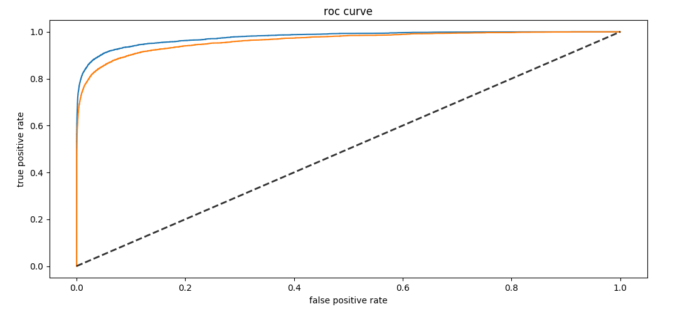

机器学习之分类问题的评估指标总结
没有测量就没有科学，同样，机器学习任务也离不开评估指标。评估指标一般来源于对业务的抽象，本文总结分类问题中常用的评估指标。
在机器学习、深度学习中，有不同的任务，大致可以分为分类、 排序、 回归、序列标注（如分词、NER）、序列预测（如时间序列预测）等几大类任务。这类任务有不同的评估方法，选择与问题相匹配的评估方法有助于快速迭代模型。本文将总结分类任务有关的评估指标，包括二分类、多分类。
这篇文章其实是两年前的学习笔记的总结，不过那时写得比较分散，于是这里整理一下分享出来，也方便自己回顾。
此外，根据业务抽象出更契合场景的评估指标，这个只能具体情况具体说了。
二分类之混淆矩阵
二分类的重点是分类器输出的阈值的选择，高于阈值的判别为正类，否则为负类。模型预测的正类与负类与和真正的标签比较获得如下混淆矩阵，
| 预测类别/真实类别 | 正类 P | 负类 N |
|---|---|---|
| 正类 | TP（真阳性） | FP（假阳性） |
| 负类 | FN（假阴性） | TN（真阴性） |
| 总和 | P = TP + FN | N = FP + TN |
所有标记的样本在预测器下都会分为如下四种预测状态之一：
| 计数指标 | 含义 |
|---|---|
| TP (true positives) | 正类预测为正类的数量 |
| FN (false negatives) | 正类预测为负类的数量 |
| FP (false positives) | 负类预测为正类的数量 |
| TN (true negatives) | 负类预测为负类的数量 |
显然，以上计数指标的总和即为样本总数，TP+FN+FP+TN为样本总量。大部分模型的输出都是一个$[0, 1]$的值，需要设置一个阈值来判断类别判别为正类或负类，一般情况下这个阈值为$0.5$，当模型输出大于该阈值，则判别为正类，否则为负类。当阈值调得越小，假阳性就越多；多阈值调得越大，假阴性就越多。
所有的正类，
所有的负类，
准确率
准确率之所有样本中，预测正确的比例，即
对正负样本不平衡敏感，通过 balanced accuracy 解决这个问题。
与之相反的是错误率，
有时候我们需要关心模型预测的更多细节，例如一个大型的数据中心，里面有大量的磁盘，那么模型能够识别里面的故障盘的比例是多少（即召回率），或者模型多的多次故障预测，磁盘真的故障的比例多少（精确率）。另外，在一些极端情况下，如数据中心有一百块磁盘，故障盘只有一块，健康盘99块，那么模型直接把所有盘判断为健康，那么模型的预测的准确率也为99%。显然，这样的准确率是没有意义的。
P-R曲线和AP面积
precision，查准率，预测为正类的样本中，有多少是真的正类，
recall，查全率，召回率，所有的正类中，有多少被预测为正类
理想情况下 precision 和 recall 越高越好，但是这两个指标是在一定程度上对立的。precision和recall的计算差异就在FP和FN上。当FP越大，precision就越小，即假阳性越大，把没有问题的样本判别为有问题的样本，这就导致较低的效率或者说较高的成本。当FN越大，recall就越小，即假阴性越大，把有问题的样本判别为没有问题的样本，这就导致漏判，带来较高的风险。
因此，precision可以看做是一个任务的成本指标，越小成本约大；recall可以看做是一个任务的风险指标，越小风险越大。因此，衡量一个任务的成本与风险可以同时使用precision与recall指标。
对于NER、中文分词等场景，输出往往是集合类型或列表类型，那么precision的计算为，
recall的计算为，
A表示正确的实体及其所在文本中的位置（NER通常是(entity,label,start,end）这样的形式，而分词是(word, start, end)）集合，B表示预测的实体及其所在文本中的集合，即
需要强调，计算评估指标不能直接使用实体的集合，比如考虑一个句子里有两个相同的实体（同名同标签）但是位置不同，模型无论是只识别其中之一还是都识别出来，求集合后的结果都一样，这样是不准确的，无法更准确评估模型。
以precision为纵坐标，recall为横坐标，那么就构成P-R曲线，它越靠近右上角模型性能越好。
P-R 曲线与坐标轴围成的面积叫 AP 分数（Average Precision Score），计算方法为，
类似的是ROC曲线，其与坐标轴围成的面积称为AUC，一会谈到。
F-1 score
precision 和 recall 的调和平均
用以反映precision 和 recall的整体性能。通过化简，可以使用混淆矩阵中的四个值表示，
在 precision 和 recall 的重要性不一致的情况下，可以加权，
可以令
来化简上式。那么如何理解这个参数$\beta$呢？考虑从极端的边界来看，
这意味着：
- 当$\beta=1$时，recall和precision同等重要
- 当$\beta \lt 1$时，precision更重要
- 当$\beta \gt 1$时，recall更重要
对于NER或中文分词任务，$F_\beta$计算方式为，
ROC曲线与AUC面积
ROC曲线全称为接收者操作特征曲线（receiver operating characteristic curve），其纵坐标是真阳性率，横坐标是假阳性率。
ROC曲线
真阳性率，在所有阳性样本中，模型检测出来的阳性比例，也就是召回率，
假阳性率，把阴性误报成阳性的比例，
TPR与FPR对正负样本不平衡不敏感，因为调整阈值下，分母N与P不会变。很多failure prediction papers都使用FAR（false alarm ratio，其实就是fpr）、FDR（failure detection rates的缩写，实质是recall），因此TPR和FPR在具体的情景中也有不同的别称。
以纵坐标是真阳性率，横坐标是假阳性率，得到ROC曲线，

ROC曲线越接近左上角，模型整体性能越好，如图中蓝色曲线比橙色曲线好。黑心虚线就是随机预测的结果。最优结果是fpr恒为0，而tpr恒为1。
绘制 ROC 曲线，最直观的方法是使用一个变动的阈值$\alpha \in [0, 1]$，分别计算该阈值下的tpr与fpr，然后绘制曲线。但是这种方法计算效率并不高。
绘制
根据ROC曲线的定义，容易绘制ROC曲线。根据标签数据集，容易获得正样本数量$P$，负类样本数量$N$。假设训练好模型，对所有样本的预测概率值进行排序，得到$s_1, s_2, \dots, s_N$。依次使用$t=s_i, i=1, 2, \dots, N$作为阈值，对于预测概率$s_i$大于阈值$t$的样本为$TP$，否则为$FP$，于是就能计算ROC曲线采样点的横坐标与纵坐标：
- $\frac{TP}{P}$
- $\frac{FP}{N}$
依次使用$t=s_i, i=1, 2, \dots, N$作为阈值，则能采样到$N$个样本点，进而可以绘制ROC曲线。
AUC
AUC（Area Under the Curve） 是 ROC 曲线与坐标轴围成的面积，面积越大，模型性能越好。计算方法可以使用梯形法（trapezoidal rule ），即曲线上所有相邻两点的连线与其下方所围成的梯形面积的总和。直观上来看，这种方法获得的计算结果倾向于低估实际的AUC面积。
AUC 的统计意义：
- AUC值越大的分类器，正确率越高，模型的性能越好，可以作为模型间比较的性能指标
- 若随机抽取一个阳性样本和一个阴性样本，分类器正确判断阳性样本的值高于阴性样本之几率。比如AUC=0.9，那么有90%的概率，模型对正样本的打分高于对负样本的打分。
多分类
二分类指标可以推广到多分类问题上，只不过需要区分两类指标：
- macro，在所有类别的指标上平均
- micro，在整体结果上计算
阈值选择
因此，准确率（Accuracy），精确率（Precision），召回率（Recall） 、$F_{\beta}$这些指标全部依赖模型的阈值选择。因此可以绘制曲线图，刻画随阈值变化以上指标的变化，最优阈值是上述指定指标取最大值时所对应的阈值。例如阈值$\alpha \in [0, 1]$，随其变动的指标$F_1$，那么当$F_1$取最大时，那么对应的$\alpha$取值为0.6，那么该值可以作为模型类别判别的阈值。
应用和总结
分类性能指标及其别名有如下表格：
| 指标 | 含义 | 补充 | 使用情景 |
|---|---|---|---|
| 错误率 error rate | 分类错误数占样本总数 | (FN+FP) / (TP+FN+FP+TN) | / |
| 准确率accuracy | 1 - 错误率 | (TP+TN) / (TP+FN+FP+TN) | 准确率与错误率不足以全面衡量模型。因为在某些情况下，模型把所有样本判别为负类也能获得一个很好的准确率 |
| 精确率 (precision) | precision = TP / (TP+FP) | 查准率。本文中的含义：所有故障预测中，有多少比例是真的故障。 | 当FP很大，即假阳性太多，precision就会很小，这会导致较大的成本（较低的效率），因为没有问题的样本被误判为有问题。 |
| 回召率 (recall) | recall = TP / (TP+FN) | 查全率。本文中的含义：在所有故障磁盘中，有多少比例被预测出来。 | 当FN很大，即假阴性太多，recall就会很小，这会导致较大的风险。因为太多有问题的样本没有被检测出来。 |
| f-score | precision和recall的调和平均 | 某些场景下，precision 和 recall 的代价是不等的，为了表达这种情况，precision 和recall 可以加权求和。 | 通常使用F1，用来同时控制precision和recall，前者是成本的来源，后者是风险的来源。说白了，当precision和recall都重要的情况下，使用该指标。 |
| FPR或FAR | FAR = FP / (FP + TN) | false alarm ratio，false positive ratio，假阳性率。在本文中的含义：所有正常磁盘中，有多少比例的磁盘被判别为故障。显然这个值越小越好。 | TPR曲线实际上就是正样本的累积分布曲线，FPR曲线实际上就是负样本的累积分布曲线 |
| TPR或FDR | 等价于 recall = TP / (TP+FN) | 在机器学习中并没有FDR的定义，它实际为failure detection rates的缩写，等价于recall定义。显然，这个值越大越好。 实际上，FDR与FAR是互相约束，通过ROC曲线可以直观到阈值大小。 | 根据FAR、FDR的定义，显然，我们需要模型的FAR值越小越好，FDR值越大越好。比较不同模型的预测性能可以直接使用以上指标。 |
| PR曲线 | precision和recall在变动阈值下构成的曲线 | 正负样本不平衡敏感，因此在正负样本不平衡时使用 | |
| ROC曲线 | TPR与FPR在变动阈值下构成的曲线 | 正负样本不平衡不敏感，因此在正负样本平衡时使用 | |
| AUC | ROC 曲线与坐标轴围起来的面积，用于度量分类任务的整体性能。 | AUC 是 ROC 曲线与坐标轴围成的图像的面积 | 当两条ROC曲线有相交情况时，不好判断模型的优良，可以使用AUC来判断。通常我们使用它来比较两个两个不同模型的整体性能 |
在应用上，一般是根据业务情景的需求抽象出评估指标，某些情况下可能还需要根据场景的理解设计更复杂的指标，如给定precision下的recall，这个指标可以理解成在给定的成本下，把系统或平台的风险尽可能减少。
参考
[1] 《机器学习》
[2] 维基百科
转载请包括本文地址：https://allenwind.github.io/blog/16051/
更多文章请参考：https://allenwind.github.io/blog/archives/